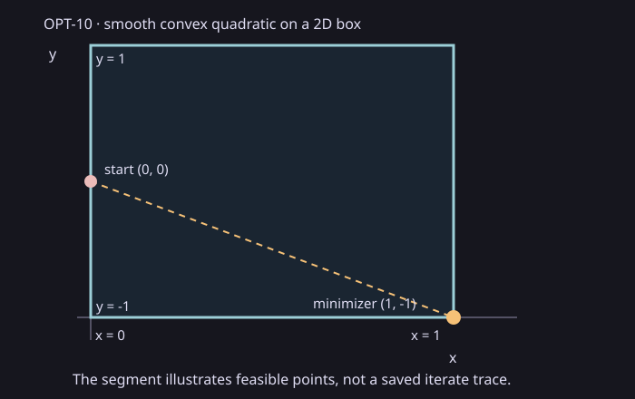

Minimal input and analytic answer
The decision coordinates are (x,y). The feasible box is
0 ≤ x ≤ 1, -1 ≤ y ≤ 1. The supplied start is
(0,0). The caller declares the differentiable convex objective
f(x,y)=0.5*((x-2)²+(y+2)²) with analytic gradient
(x-2,y+2). Independent coordinatewise minimization gives
(1,-1) and objective 1. The unconstrained center
(2,-2) lies outside the box. The dashed segment is a geometric
illustration of feasible points, not a saved iteration trace.

Recorded result
| Output | Saved value | Independent answer |
|---|---|---|
| Point | (1,-1) | (1,-1) |
| Objective | 1 | 1 |
| Projected residual | 0 | 0 at the exact box minimizer |
Every timed call checked the point, objective, gradient, projected residual, one accepted iteration and numerical evidence label. The API's stationarity is conditional on the caller's convexity and gradient assertions. It is not a validated convexity certificate, numerical global-error bound or complete optimal family.
Measurement and scope
One excluded 100-call warmup preceded seven measured 100-call batches: 700 verified calls, zero observed failures. Median batch duration was 44,444,200 ns (range 40,495,400–49,417,700 ns). Each interval includes feasible-set/objective construction, production LP registration and workspace creation, the public minimization call and literal checks. It excludes CSV output and rendering. These are descriptive single-adapter durations on the recorded host; no comparator, speedup or source-mapped limiter is claimed. Native internal counters and actual thread activity were unavailable.
Source commit: 9becda80d9a0eb7383fa2215f6b5c1932d3502a0. The saved record,
raw trial CSV, summary CSV,
manifest and offline ZIP
bind the observation to the build and host receipts. Reproduce with
python scripts/reports/opt10/capture.py --source <clean-checkout> --capture <new-directory> --commit 9becda80d9a0eb7383fa2215f6b5c1932d3502a0 --cmake <cmake>,
then run collect.py and render_saved.py on the saved capture.